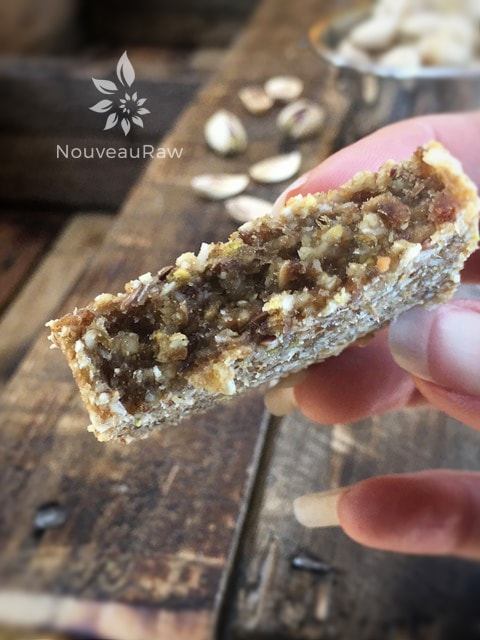

Fennel Seed and Lemon Bars

~ raw, vegan, gluten-free, Paleo ~
You know, pistachios are one of those nuts that are underused in recipes. I do love them, perhaps too much, and that is why I don’t have them sitting around too often. Bob loves them also, and you can always tell where he sits in the house because it seems like there is always a trail of pistachio shells to be found. :)
Pistachios are full of nutrients and fiber and known to be great for digestion. New research indicates that these ultra-healthy nuts have prebiotic characteristics – meaning they can help support higher levels of beneficial bacteria in your digestive tract.
Just one serving of pistachios can make a big difference for your aching stomach. And there’s more good news – one serving is 47 nuts, a larger serving size than any other type of nut, which clocks in at only 158 calories and contains more fiber than half a cup of spinach. That fiber, along with pistachios’ unsaturated fat, keeps your digestive system running smoothly. Healthy fats also help to lower cholesterol levels.
This bar can be dehydrator-free if you want it to. Which is a great option to have? If you decide not to dehydrate them, make sure to keep them stored in the fridge or freezer. I hope you enjoy this treat, Blessings.
yields 9 bars
- 1/2 cup raw pistachios, soaked
- 1/2 cup raw sunflower seeds, soaked
- 1/2 cup raw cashews, soaked
- 1/2 cup whole flax seeds
- 3/4 cup shredded unsweetened coconut
- 4 tsp fennel seeds
- 1/2 tsp Himalayan pink salt
- 1 1/2 cups Medjool dates, pitted
- 2 tsp lemon extract
- 3 Tbsp water
Preparation:
- In the food processor, fitted with the “S” blade, combine the pistachios, sunflower seeds, cashews, flax seeds, coconut, fennel, and salt. Pulse till everything is broken into small pebble-sized pieces.
- If you already have soaked and dehydrated nuts and seeds, there is no need to re-soak them.
- Add dates and lemon extract. Mix until the batter starts rolling into a ball in the machine.
- If the batter is too dry, add the water, 1 Tbsp at a time. The amount of moisture in the dates and if you used soaked nuts and seeds will determine if or how much water is needed.
- The batter should almost appear to dry but sticks together when pinched.
- Line an 8 x 8″ baking pan with plastic wrap (for the ease of removing later) and press the batter into it, firmly and evenly.
- Alternatively, you can use the bar press, which is what I did to get compressed and even-sized bars. Click (here) to learn about this technique.
- Freeze for 4+ hours.
- Remove from the pan and cut into desired shapes. Wrap individually and store in the fridge for 1 week or freezer for 1-2 months.
- Option – you can dehydrate these as well. Place them on a mesh sheet that comes with the dehydrator and dry at 145 degrees (F) for 1 hour, then reduce to 115 degrees for 6+ hours. Pull them out at the dryness that you want.
Culinary Explanations:
- Why do I start the dehydrator at 145 degrees (F)? Click (here) to learn the reason behind this.
- When working with fresh ingredients, it is essential to taste test as you build a recipe. Learn why (here).
- Don’t own a dehydrator? Learn how to use your oven (here). I do, however honestly believe that it is a worthwhile investment. Click (here) to learn what I use.

© AmieSue.com